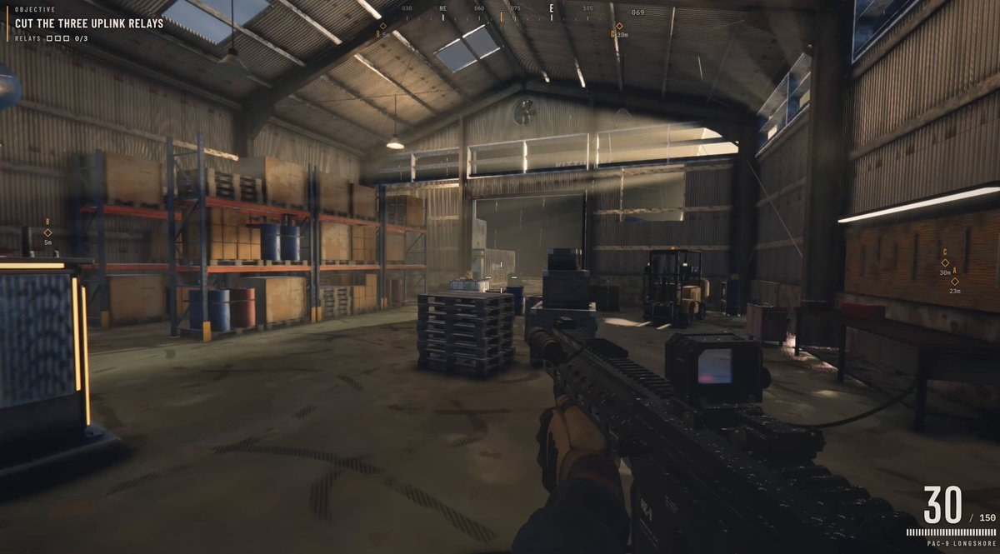
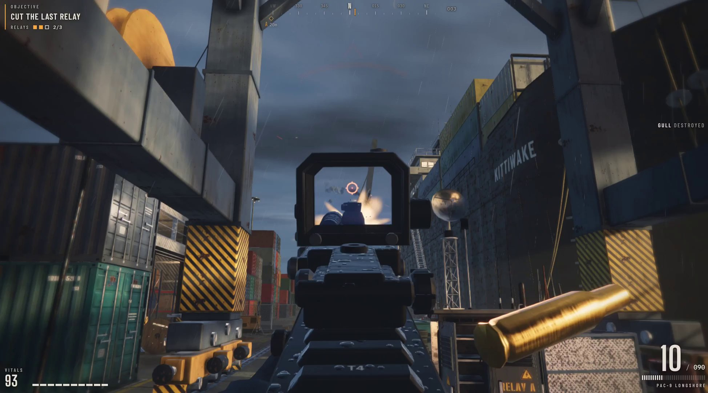
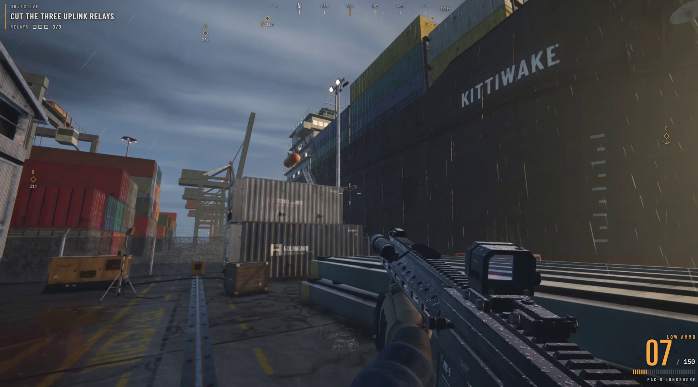
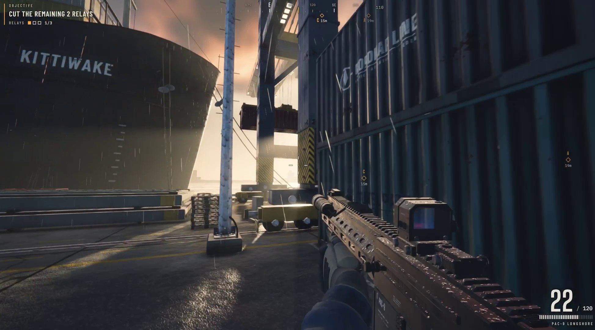

港口 FPS 合集：电脑、手机、飞牛 NAS 三端入口，浏览器即玩。
键鼠桌面浏览器，原版 / 中文版 / 国际版（13 语）。

Felix 原作归档，英文界面，键鼠操作。

菜单、电台与任务目标中文化，品牌「盐线行动」。

13 种界面语言；设置内可切换，默认跟随浏览器。
横屏触控：双拇指移动与视角，中文或英文界面。

中文界面，全屏与画质优化，专为触屏布局。
英文 SALTLINE 界面，沿用触控与横屏优化。
飞牛应用：静态服务 + 浏览器打开合集；亦可在本页直接选版本。
合集首页 + 原版 / 中文版 / 国际版三文件；安装后用系统浏览器访问。